조경기사 (2009-08-30 기출문제)
1과목: 조경사
1. 일본의 고산수정원은 어떤 사상에 의해 조성되었는가?
- 불교 선종의 영향으로 정숙하게 도를 닦는 목적으로 조성
- 불교 선종의 영향으로 위락이나 산책을 위한 실용적인 목적으로 조성
- 불교 정토종의 정숙하게 도를 닦아 극락 정토세계를 희구하는 목적으로 조성
- 신선사상의 목적으로 정숙하게 관조하는 목적으로 조성
(정답률: 83%)

2. 고려의 치세 475년을 통해 조경이 가장 활발하게 행해졌던 시대는 다음 중 어느 왕 때인가?
- 11대 문종
- 18대 의종
- 23대 고종
- 25대 충렬왕
(정답률: 83%)
3. 다음 Peristylium에 관한 설명 중 틀린 것은?
- 장방형의 야트막한 impluvium이 설치
- 포장되지 않은 주정의 역할
- 넓게 보이도록 하기 위하여 화훼류, 조각품, 분천 따위로 정형적 구성
- 주랑식 중정
(정답률: 48%)
4. 불음을 전하는 사물 중 오행원리에 입각해 불을 다루는 부엌에 걸어두어 화재를 막고자 한 것은?
- 법고
- 운판
- 목어
- 범종
(정답률: 52%)
5. 연못의 형태가 잘못 연결된 것은?
- 경회루 - 방지방도
- 창덕궁 부용지 -방지원도
- 다산초당 - 방지원도
- 선교장 - 방지원도
(정답률: 74%)
6. 19세기 도시의 공공공원을 만들기 위한 공원가치로서 적합하지 않은 것은?
- 깨끗한 공기와 휴식공간의 제공으로 도시 주민의 건강 증진
- 공원이 주는 자연이 인간의 윤리에 대한 영감의 원천
- 확장되는 산업도시로의 개발 억제
- 도시환경 개선으로 생산성 증가에 의한 경제적인 관심
(정답률: 59%)
7. 다음의 별서 가운데 연못을 조성하면서 인위적인 섬을 여러 곳에 조성한 곳은?
- 양산 소한정 일원
- 영양 서석지 일원
- 예천 초간정 일원
- 보길도세연지일원
(정답률: 52%)
8. 일본정원 중 서로 연결이 잘못된 것은?
- 계리궁(가쓰라 이궁) - 침전조정원양식
- 모월사(모오에쓰지) - 정토정원양식
- 불심암 - 다정원양식
- 서천사 - 선종정원양식
(정답률: 45%)
9. Amenophis 3세 때에 종사한 신하의 묘(분묘)벽화에서 추정할 수 있는 고대 이집트 조경의 목적으로 가장 적합한 것은?
- 미, 향락, 종교의식
- 생산, 오락, 정원
- 운동, 관수,오 락
- 소일, 운동, 산책
(정답률: 85%)
10. 정원의 조영시기가 오래된 것부터 순서대로 나열된 것은?
- 피에졸레→마다마→에모→보르뷔콩트
- 마다마→피에졸레→카스텔로→로톤다
- 마다마→피에졸레→로톤다→보르뷔콩트
- 란테→마다마→로톤다→베르사유궁전
(정답률: 48%)
11. 시카고 박람회가 미친 영향은?
- 도시계획의 발달 기틀을 마련하였다.
- 도시 정화 운동이 일어나 수로를 정비하였다.
- 1794년 영국에 아메리칸 아카데미를 설립하였다.
- 건축. 조경 각 분야별 독립성이 부여 되었다.
(정답률: 70%)
12. 중국의 문헌 중에서 거주에 관한 일체를 취급하고 있는 것으로 실로, 화목, 수석, 식어 등 12부로 되어 있으며 특히 화목의 배식과 수경시설의 조성법 등이 자세히 기록이 되어 있는 것은?
- 문진향의 장물지
- 양현지의 낙양가람기
- 계성의 원야
- 이두의 양주화방록
(정답률: 65%)
13. 고려 1146~1170년 때는 많은 조원을 조성하였는데 괴석으로 석가산을 조성한 기록이 있다. 이 석가산이 있던 고려 왕궁의 명원은?
- 안학궁 후원
- 반월성 동원
- 수창궁 북원
- 경복궁 북원
(정답률: 46%)
14. 프레드릭 로 옴스테드와 캘버트 보우가 제안한 미국 뉴욕의 센트럴파크 설계 당선안은?
- Greensward
- Garden Cities of Tomorrow
- Cities in Evolution
- Green Fingers
(정답률: 86%)
15. 각국은 그 나라마다 독특한 정원양식을 갖고 있다. 무굴인도의 정원양식은 다음 중 어디에 속하는가?
- 동서양의 절충식
- 정형식
- 풍경식
- 종교적 바탕의 사실주의
(정답률: 63%)
16. 보르 비 콩트정원에 대한 설명 중 옳지 않은 것은?
- 건축이 조경에 종속적인 관계를 갖고 있으며, 중심선에 대칭적인 구성이다.
- 루이 14세의 명령으로 르노트르가 설계하였다.
- 대규모의 단순한 수로와 화려한 자수 화단으로 구성되었다.
- 성관에 부속된 정원으로서 총림으로 둘러 싸였다.
(정답률: 46%)
17. 영국인 Brown 이 설계한 우리나라 최초의 공원은?
- 파고다공원
- 장충단공원
- 남산공원
- 삼청공원
(정답률: 80%)
18. 18세기 영국의 정원과 17세기 프랑스의 정원을 비교한 설명 중 옳지 않은 것은?(단, 전자는 영국의 정원을, 후자는 프랑스의 정원을 의미한다.)
- 전자는 자연주의 사상을, 후자는 절대주의를 표현했다.
- 전자는 지형이 완만한 구릉을 그대로, 후자는 대지를 평탄하게 처리했다.
- 전자는 수목을 전정하지 않고 곡선을 사용, 후자는 엄격한 기하학적 선을 사용했다.
- 전자는 기후조건으로 화단이 발달치 못했고, 후자는 소로 주변에 경재 화단을 많이 사용했다.
(정답률: 63%)
19. 다음은 르네상스 시대에 만들어진 이탈리아의 에스테장과 란테장의 정원에서 찾을 수 있는 공통적인 특징을 설명한 것이다. 잘못된 것은?
- 16세기말에 피렌체에 만들어진 노단식 별장 정원이다.
- 제 1노단에는 분수와 화단정원이 만들어 졌다.
- 평면적인 특징은 정형적인 대칭형기법이다.
- 수경시설로는 캐스케이드와 장식분수가 이채롭다.
(정답률: 37%)
20. 중국의 원림에서 볼 수 있는 창 중 방의 장식용으로 주로 사용된 창은?
- 화창
- 루창
- 공창
- 동창
(정답률: 67%)
2과목: 조경계획
21. 우리나라에서 환경영향평가 대상사업을 수립, 시행 할 때 미리 그 사업이 환경에 미칠 영향을 평가, 검토하여 친환경적이고 지속 가능한 개발이 되도록 함으로써 쾌적하고 안전한 국민생활을 도모할 목적으로 만든 법은?
- 자연공원법
- 환경정책기본법
- 환경영향평가법
- 환경보전법
(정답률: 72%)
22. 개인적 공간의 정의와 가장 거리가 먼 것은?
- 타인이 침범할 수 없는 인체를 둘러싸고 있는 공간이다.
- 개인을 둘러싸고 있는 보이지 않는 경계를 지닌 공간이다.
- 인체의 이동과는 무관한 장소 중심적인 사적공간이다.
- 개인적 공간의 규모는 사람에 따라서 또한 상황에 따라서 변화한다.
(정답률: 75%)
23. 주차방식에 관한 설명으로 틀린 것은?
- 평행주차는 주차 및 출입폭이 최소이므로 교통량이 많은 곳에 좋다.
- 직각주차는 도로폭이 넓은 곳이나 통과 교통이 없는 노외지역에 좋다.
- 60도 주차는 45도 주차보다 대당 소요면적이 넓다.
- 45도 주차는 직각 주차보다 토지이용도가 낮으나 차량 진출입이 용이하다.
(정답률: 46%)
24. 공장조경의 식재계획으로 틀린 것은?
- 공장경관을 창출하는 종합적인 식재방식을 도입한다.
- 수종 선정에 있어서 경관성의 원칙을 최우선으로 한다.
- 녹화용 수목은 이식이 용이한 수목을 선정한다.
- 식재방법은 공장의 운영관리적 측면을 배려한다.
(정답률: 74%)
25. 정밀토양도에서의 분류 중 같은 토양통 내에서 같은 토성을 갖는 토양을 말하며, 명명은 토양통 및 토성을 합하여 예를 들어 “예천 사양토”와 같이 불리는 것은?
- 토양계
- 토양구
- 토양상
- 토양군
(정답률: 49%)
26. 주택정원에서 바깥의 공적인 분위기에서 주택이라는 사적인 분위기로 들어오는 전이공간으로 주택의 첫인상을 주는 역할을 하는 공간은?
- 전정
- 주정
- 후정
- 작업정
(정답률: 80%)
27. 자연공원법상 국립공원위원회에 한해서만 심의할 수 있는 사항은?
- 자연공원의 지정, 폐지 및 구역변경에 관한 사항
- 공원 기본계획의 수립에 관한 사항
- 공원계획의 결정, 변경에 관한 사항
- 자연공원의 환경에 중대한 영향을 미치는 사업에 관한 사항
(정답률: 40%)
28. <보기>에서 도시공원 및 녹지 등에 관한 법률상 녹지활용계약의 대상이 되는 토지의 요건에 해당되는 것을 모두 고른 것은?
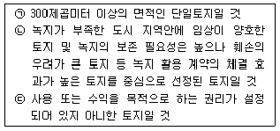
- ㉠
- ㉠, ㉡
- ㉡, ㉢
- ㉠, ㉡, ㉢
(정답률: 57%)
29. 각각의 운동시설 계획시 고려할 사항으로 부적합한 것은?
- 농구코트의 장축 방위는 남-북 축을 기준으로 하고, 가까이에 건축물이 있는 경우에는 사이드라인을 건축물과 직각 혹은 평행하게 배치 계획한다.
- 배구장의 코트는 장축을 남-북으로 설치하고, 주풍방향에 수목 등의 방풍시설을 계획한다.
- 야구장의 방위는 내, 외야수가 오후에 태양을 등지고 경기할 수 있도록 홈플레이트를 서쪽과 남동쪽사이에 자리 잡게 계획한다.
- 테니스 코트 장축의 방위는 정남-북을 기준으로 동서 5~15도 편차 내의 범위로 하며, 가능하면 코트의 장축방향과 주 풍향의 방향이 일치하도록 계획한다.
(정답률: 63%)
30. 이용 후 평가를 시행함에 있어, 프리드만이 주로 옥외공간을 대상으로 한 설계 평가시 분석한 관련 사항들 중 연관성이 없는 사항은?
- 관찰자 분석
- 설계과정 분석
- 주변 환경 분석
- 물리, 사회적 분석
(정답률: 55%)
31. 다음 ( )안에 적합한 용어를 순서대로 나열한 것은?
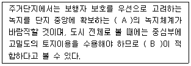
- A : 대상형, B : 환상형
- A : 방사형, B : 쐐기형
- A : 집중형, B : 분산형
- A : 격자형, B : 원호형
(정답률: 45%)
32. 관광지에 내방 할 가능성을 지닌 사람들이 거주하는 범위로서 1차 시장이라고도 하는 관광권은?
- 유치권
- 행동권
- 보완권
- 경합권
(정답률: 67%)
33. 국토의 계획 및 이용에 관한 법률상의 용도지구 종류 중 문화재 및 중요시설물의 보호와 보존을 위하여 필요한 때 지정하는 지구의 명칭은?
- 보존지구
- 경관지구
- 시설보호지구
- 미관지구
(정답률: 61%)
34. 조경학의 정의 중 가장 현대적 개념에 가까운 것은?
- 조경은 인간의 이용과 즐거움을 위하여 토지를 다루는 기술이다.
- 조경은 미적 혹은 긍정적 효과를 얻기 위하여 경관, 가로, 건물 등을 조성 또는 개량하는 기술이다.
- 자원보존과 관리를 고려하면서 문화적, 과학적 지식을 활용하여 유용하고 쾌적한 환경을 조성하기 위해, 국토를 계획, 설계, 관리하는 기술이다.
- 토지를 미적, 경제적으로 조성하는데 필요한 기술과 예술이 종합된 실천과학이다.
(정답률: 75%)
35. 어느 주택 단지의 규모가 200000미터제곱이고, 주거용 건물의 바닥 면적이 40000미터제곱, 평균 층수가 8층일 때 이 주택단지의 용적률은?
- 120%
- 140%
- 160%
- 250%
(정답률: 72%)
36. 홀은 4종류의 대인거리를 구분하였는데, 이 구분 중 주로 업무상의 대화에서 유지되는 거리인 사회적 거리의 범위(ft)로 가장 적합한 것은?
- 1.5~4
- 4~12
- 12~18
- 18~24
(정답률: 57%)
37. 동시 수용력을 구함에 있어, 시설과잉을 방지하며, 경영의 효율화를 기하기 위하여 사용되는 개념은?
- 최대일율
- 서비스율
- 회전율
- 동시체제율
(정답률: 27%)
38. 조경가의 일반적 역할(또는 업무)과 가장 거리가 먼 것은?
- 조경계획 및 평가
- 조림계획
- 조경설계
- 단지계획
(정답률: 58%)
39. 도시공원 및 녹지 등에 관한 법률상 도시의 자연적 환경을 보전하거나 이를 개선하고 이미 자연이 훼손된 지역을 복원 개선함으로써 도시경관을 향상시키기 위하여 설치하는 녹지로 가장 적합한 것은?
- 시설녹지
- 경관녹지
- 완충녹지
- 보호녹지
(정답률: 64%)
40. 어느 도시공원 피크닉장의 연간 이용자수가 500000명, 최대일률이 0.03(3계절형), 시설이용률 30% 회전률(시간집중률) 1/2이며, 1인당 소요면적이 녹지포함 10미터제곱이라고 할 때 이 피크닉장의 총 면적(미터제곱)은?
- 9000
- 22500
- 45000
- 90000
(정답률: 66%)
3과목: 조경설계
41. 환경 자극-반응과정에 대한 설명 중 잘못된 것은?
- 일반적으로 지각과 인자는 연속된 하나의 과정으로 이해되어 진다.
- 인지는 개인의 환경에 관한 지식이 증가되거나 수정되어 지는 과정이라고도 볼 수 있다.
- 지각은 넓은 의미에 인지의 한 부분적 과정이라고도 할 수 있다.
- 지각은 환경적 사물을 받아들이는 과정을 강조하고 있고 인지는 감지과정을 강조하는 것이 보통이다.
(정답률: 45%)
42. 다음 중 먼셀색체계의 색상환을 구성하는 5가지 주요 색상은 어느 것인가?
- 빨강, 노랑, 초록, 파랑, 보라
- 주황, 보라, 노랑, 자주, 연두
- 흰색, 빨강, 검정, 파랑, 노랑
- 보라, 초록, 파랑, 연두, 흰색
(정답률: 72%)
43. 다음 중 아치에 대한 설명으로 부적합한 것은?
- 동, 서양에서 공통적으로 사용한 구조물이다.
- 구조적으로 압축력을 인장력으로 전환하여 지반에 전달하는 구조이다.
- 아치를 이용하면 기둥과 인방구조에서 경간이 짧은 단점을 극복할 수 있다.
- 아치의 기술은 B.C 2세기경 로마인에 의해 크게 발전 하였다.
(정답률: 61%)
44. 음수전은 일반적으로 성인용과 아동용으로 구분하는데, 다음 중 아동용 음수전의 높이로 가장 적합한 것은? (단, 수도꼭지가 위로 향하여 물이 위로 솟게 하는 경우)
- 25~35cm
- 35~45cm
- 45~60cm
- 60~75cm
(정답률: 54%)
45. 린치가 연구한 도시의 이미지의 개념과 가장 거리가 먼 것은?
- 식별성
- 선호도
- 가시성
- 길 찾기
(정답률: 47%)
46. 1급 공인 수영 경기장의 내부시설 규칙 중 수심으로 가장 적합한 것은?
- 0.5~0.9 m
- 1.0~1.4 m
- 1.5~1.8 m
- 1.8~2.0 m
(정답률: 50%)
47. 다음 착시의 그림들 중 반전실체착시에 해당되는 것은?
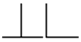
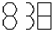
(정답률: 65%)
48. 다음 중 조경공간의 휴게시설물의 설명으로 틀린 것은?
- 그늘시렁(퍼걸러)는 조형성이 뛰어난 것을 시각적으로 넓게 조망할 수 있는 곳이나 통경선이 끝나는 곳에 초점요소로서 배치할 수 있다.
- 그늘막(셜터)는 처마 높이를 2.5~3m를 기준으로 설계 한다.
- 의자는 휴지통과의 이격거리 0.9m 정도 공간을 확보 한다.
- 앉음벽은 긴 휴식에 적합한 재질과 마감방법으로 설계하며, 앉음벽의 높이는 24~35cm를 원칙으로 한다.
(정답률: 70%)
49. 다음 중 Litton이 말한 경관의 우세요소에 속하지 않는 것은?
- 형태
- 색채
- 축
- 질감
(정답률: 69%)
50. 설계과정에서 기본구상이 이루어진 다음 구체적인 세부설계에 도달하는데 이때 현실의 제약조건 때문에 기본구상과 계획이 또 다시 재검토 되고 수정되면서 원래의 구상이 점차로 구체화되는 과정을 무엇이라고 하는가?
- 구상계획
- 실시계획
- 계획의 평가
- 설계에서의 환류 (Feed-back)
(정답률: 60%)
51. 도면에 원호의 반지름을 나타내는 경우 치수선의 표현이 부적합한 것은?
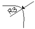
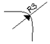
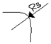
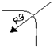
(정답률: 65%)
52. 도면작성에 사용되는 축척에 대한 설명으로 틀린 것은?
- 동일 도면안에서 다른 축척으로 그린 그림이 섞여 있을 때는 각 그림마다 축척을 기입한다.
- 그림의 형태가 치수와 정확히 비례하지 않을 때는 N.S이라고 표시한다.
- 축척 1/10로 나타낸 면적은 1/20로 나타낸 면적의 2배이다.
- 배치도 등에서 축척이 적어 실감나지 않을 때 Bar Scale을 사용한다.
(정답률: 58%)
53. 경관계획을 위한 모의조작기법에 포함되지 않는 것은?
- 계획평면분석
- 컴퓨터그래픽
- 사진수정
- 모형제작
(정답률: 65%)
54. 경관 구성에 있어서 틀짜기(enframement)의 설명으로 적당하지 않은 것은?
- 통상 초점이 있는 경관을 더욱 강조해 준다.
- 관찰자의 시선을 틀 속으로 집중하게 한다.
- 근경을 제거함으로써 더욱 큰 효과를 갖는다.
- 그림의 틀과 같은 효과를 갖는다.
(정답률: 65%)
55. 사설수목장림의 설치 기준에 관한 설명으로 틀린 것은? (단, 장사 등에 관한 법률 시행령을 기준으로 한다.)
- 개인 또는 가족수목장림은 1개소만 조성할 수 있다.
- 개인 또는 가족수목장림의 면적은 100제곱미터 미만이어야 한다.
- 개인 또는 가족수목장림의 표지는 수목 1그루당 2개까지만 설치할 수 있다.
- 개인 또는 가족수목장림의 표지의 면적은 150제곱센티미터 이하여야 한다.
(정답률: 52%)
56. 다음 중 경관 측정방법이 아닌 것은?
- 시뮬레이션기법
- 리커트척도
- 쌍체비교법
- 형용사목록법
(정답률: 39%)
57. 다음 선은 어떤 용도로 사용하는 것인가? (단, 선은 가는 실선으로 한국산업규격을 기준으로 한다.)
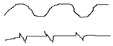
- 대상물의 일부를 떼어낸 경계를 표시하는 선
- 도형내의 절단면을 90도 회전시켜 표시하는 선
- 도형의 특정한 부분을 다른 부분과 구별하는 선
- 위치 결정의 근거임을 나타내는 선
(정답률: 58%)
58. 야외공연장 설계시 고려해야 할 사항으로 틀린 것은?
- 객석에서의 부각은 30도 이하가 바람직하며 최대 45도까지 허용한다.
- 객석의 전후영역은 표정이나 세밀한 몸짓을 이상적으로 감상할 수 있는 생리적 한계인 15m 이내로 한다.
- 평면적으로 무대가 보이는 각도(객석의 좌우영역)는 104~108도 이내로 설정한다.
- 이용자의 집, 분산이 용이한 곳에 배치하며, 공연설비 및 기구 운반을 위해 비상차량 서비스동선에 연결한다.
(정답률: 70%)
59. 팽이나 레코드판과 같은 회전원판을 일정 면적비의 부채꼴로 나누어 칠해 회전시키면, 표면의 색들은 혼색되어 하나의 새로운 색이 보이게 되며, 이 색은 밝기와 색에 있어서 원래 각 색지각의 평균값으로 나타난다. 이 혼색방법은?
- 색광혼색
- 감법혼색
- 중간혼색
- 병치가법혼색
(정답률: 58%)
60. 다음 저드가 유형화한 색채조화의 원리 중 <보기>의 설명이 가리키는 것은?
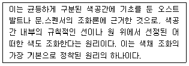
- 질서의 원리
- 명료의 원리
- 친근성의 원리
- 유사성의 원리
(정답률: 40%)
4과목: 조경식재
61. 들잔디(Zoysia japonica) 파종시 고려할 사항 중 틀린 것은?
- 파종은 3~4월경에 한다.
- 파종 후 롤러로 가볍게 진압한 후 충분히 젖도록 관수한다.
- 파종지는 20cm 이상 경운하여 롤러로 가볍게 다진 후 파종한다.
- 씨드벨트(seed belt)로 파종할 때에는 정지된 지면에 종자가 닿도록 벨트를 깔고 충분히 관수 한 다음, 고운 흙을 1mm 내외 배토하고 다시 관수 한 후 폴리에틸렌 필름을 덮어준다.
(정답률: 42%)
62. 차광을 위한 고속도로의 중앙분리대 식재에 알맞은 수고cm는? (단, 승용차대 승용차의 경우를 예로 한다.)
- 100
- 150
- 200
- 250
(정답률: 56%)
63. 다음 중 목본성 식물이 아닌 것은?
- Evodia daniellii Hemsl.
- Paeonia lactiflora Pall.
- Hamamelis japonica Siebold & Zucc.
- Magnolia stellata Maxim.
(정답률: 27%)
64. 다음은 자연풍경식 배식도면이다. 주목 1이 소나무일 경우에 부목 2, 부목 3으로 가장 적합한 수종은? (단, 화살표방향은 배식을 바라보는 방향이다.)
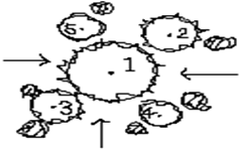
- Magnolia denudata Desr.
- Liriodendron tulipifera L.
- Pinus densiflira Siebold & Zucc.
- Chaenomeles sinensis Koehne
(정답률: 70%)
65. 일조가 부족한 지역에 산울타리를 조성하고자 할 때 가장 적합한 수종은?
- Torreya nucifera Siebold & Zucc.
- Poncirus trifoliata Raf.
- Pyracantha angustifolia C.K.Schneid.
- Chaenomeles speciosa Nakai
(정답률: 33%)
66. 고속도로에서 명암순응식재를 할 때 옳지 않은 것은?
- 터널 입구에 그늘을 만든다.
- 운전자의 시력 장애를 방지한다.
- 경관의 단조로움을 피하기 위하여 명암을 교차해서 식재한다.
- 가급적 교목성 수종을 많이 심어준다.
(정답률: 72%)
67. 식재로부터 얻을 수 있는 기능을 건축적, 공학적, 미적, 기상학적으로 구분하였다. 다음 중 건축적 이용 목적의 식재 기능과 관계가 먼 것은?
- 사생활의 보호
- 차폐와 은폐
- 공간 분할
- 섬광 조절
(정답률: 72%)
68. 캔터키블루그래스(Kentucky bluegrass)가 가장 잘 자라는 pH는?
- 3.5~4.2
- 4.2~5.2
- 5.2~6.0
- 6.0~7.8
(정답률: 44%)
69. 소나무군집에서 모든 종의 개체수의 총합은 250개체이고 그 중 소나무의 개체수는 150개체이다. 소나무의 상대밀도(%)는?
- 16.6
- 37.5
- 60
- 90
(정답률: 74%)
70. 암그루와 수그루가 따로 따로 존재하지 않는 것은?
- Ilex serrata Thunb.
- Lindera erythrocarpa Makino
- Taxus cuspidata Siebold & Zucc.
- Cornus kousa F. Buerger ex Miquel
(정답률: 19%)
71. 초원과 같이 거의 균질한 식생이 광대한 면적에 걸쳐 이루어진 경우에 적용하기 가장 좋은 표본추출법은?
- 전형표본추출법
- 무작위추출법
- 계통추출법
- 대상추출법
(정답률: 61%)
72. 야생동물 이동통로 설치시 고려할 사항이 아닌 것은?
- 주변 생태계와 유사한 식물을 식재하거나 주변지형을 고려한 설치로 주변 서식지 특성과 조화를 이루도록 한다.
- 뚜렷한 보호 대상종이 존재하는 겅우, 특정종을 위한 소규모의 이동통로를 여러 곳에 만드는 것보다 전체종을 대상으로 대규모 이동통로를 만드는 것이 바람직하다.
- 차량에 의한 동물피해를 최소화하기 위한 수단으로써 과속방지턱, 노면처리, 동물 출현 표지판 등의 보조시설을 설치할 수 있다.
- 인접도로에서 발생하는 소음 및 진동, 자동차 혹은 기타 건물의 불빛 등의 외부간섭을 차단하기 위해 통로를 은폐하는 것이 바람직하다.
(정답률: 72%)
73. 다음 중 정형식재의 기본 패턴이 아닌 것은?
- 대식
- 열식
- 모아심기
- 집단식재
(정답률: 39%)
74. 방음용 식재를 할 때 도로에 따라 설치되는 식수대와 가옥간의 이상적인 최소 거리는 몇 m 인가?
- 10
- 30
- 50
- 70
(정답률: 60%)
75. 다음 중 꽃의 색깔이 나머지와 다른 한 수종은?
- Cornus officinalis Siebold & Zucc.
- Corylopsis gotoana var. coreana T.Yamz.
- Prunus tomentosa Thunb.
- Lindera obtusiloba Blume var. obtusiloba
(정답률: 37%)
76. 방화식재용 수목으로서 아황산가스와 배기가스에 가장 약한 것은?
- Camellia japonica L.
- Juniperus chinensis Kaizuka
- Euonymus japonicus Thunb.
- Prunus yedoensis Matsum
(정답률: 40%)
77. 생태적 천이단계에서 성숙단계의 설명으로 틀린 것은?
- 총생산량/군집호흡량 은 1에 가깝다.
- 순군집생산량(수확량)이 높다.
- 먹이연쇄는 잔재연쇄가 우점하고 그물눈 모양이 된다.
- 생물과 환경 간의 영양물 교환 속도는 느리다.
(정답률: 43%)
78. 여러 개의 경관요소 또는 생태계로 이루어지는 수평적인 관계를 연구하는 경관생태학의 3가지 일반원칙과 가장 관계가 먼 것은?
- 구조
- 기능
- 변화
- 소멸
(정답률: 65%)
79. 식물 군락을 성립시키는 외적 환경요인과 관계없는 것은?
- 기후 요인
- 유전적 요인
- 토양 요인
- 생물적 요인
(정답률: 62%)
80. 정형식 식재에 관한 설명 중 옳지 않은 것은?
- 경관구성이 자유롭다.
- 축의 교점에 분수, 연못, 조각, 정형수 등을 놓아 강조 한다.
- 1축, 1점이 설정되면 식재는 축 또는 점에 대하여 등거리로 대칭형이 된다.
- 방사축의 한 점에서 같은 각도로 나오는 경우는 같은 무게가 주어진다.
(정답률: 61%)
5과목: 조경시공구조학
81. 다음과 같은 등사면의 단면을 갖는 수로의 경심은 얼마인가?
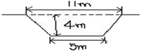
- 20.2m
- 1.84m
- 2.13m
- 1.98m
(정답률: 42%)
82. ABCD로 구성되는 면적을 성토에 의해서만 평탄하게 만들려면 마감높이로 가장 적합한 것은?
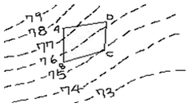
- 74.5m
- 75.5m
- 77.0m
- 78.5m
(정답률: 53%)
83. 조경공사에 사용되는 금속재료의 분류상 긴결 철물에 해당되지 않는 것은?
- 띠쇠
- 듀벨
- 리벳
- 익스팬드형강
(정답률: 49%)
84. 1000mm 원형배수관에 만류로 흐를 때 유속이 1.34m/s 이다. 수심 30cm로 흐를 때 원형 단면의 수리특성 곡선에 의한 유속과 유량의 교점이 각각 0.75, 0.17 이라면 수심 30cm 일 때 유량은 약 얼마인가?
- 1.⑤m3/s
- 0.79m3/s
- 0.56m3/s
- 0.18m3/s
(정답률: 31%)
85. 한국산업규격(KS)의 부문기호 중 “L"이 의미하는 것은?
- 기계
- 전기
- 토건
- 요업
(정답률: 41%)
86. 다음 보의 표시방법을 도해한 것 중 게르버보에 해당하는 것은?
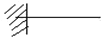
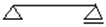
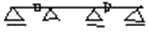
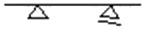
(정답률: 54%)
87. 관수로의 떨어진 두 지점에서의 수압을 측정하면 차이가 발생한다. 이것은 관내의 마찰과 기타 저항으로 물이 가지고 있는 에너지의 소모가 있기 때문이다. 이 손실 에너지의 크기를 수주의 높이로 나타내는 용어는?
- 감소에너지
- 만류
- 유실반경
- 손실수두
(정답률: 66%)
88. 옥외공간에서 바람이 부는 지역의 경우 분수고(물이 분사되는 높이)를 H라고 할 때 수조의 폭(크기)으로 가장 적절한 높이는?
- 2H
- 3H
- 4H
- 5H
(정답률: 65%)
89. 지형도에 나타나는 등고선의 성질에 관한 설명으로 옳은 것은?
- 계곡선은 지모상태를 명시하고 표고의 읽음을 쉽게 하기 위하여 주곡선 간격의 1/5배 거리로 표시한 곡선이다.
- 산령과 계곡이 만나 이들의 등고선이 서로 쌍곡선을 이루는 것과 같은 부분을 고개라고 한다.
- 등고선은 급경사지에서 간격이 넓고, 완경가지에서는 좁다.
- 조곡선은 주곡선으로 지형을 완전하게 표시할 수 없는 때 주곡선 간격의 2배로 표시한 곡선이다.
(정답률: 53%)
90. 시공도면 작성시 아래와 같은 표시는 무엇을 의미하는가?
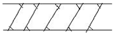
- 지반
- 잡석다짐
- 석재
- 벽돌벽
(정답률: 66%)
91. 1주의 무게가 200kg인 수목 10주를 거리 50m 지점에 목도로 운반하려 한다. 평균왕복속도는 2km/hr, 1일 실작업시간은 6시간, 준비작업 시간은 2분, 1인 1회 운반량은 50kg이고, 목도공의 노임은 72000원이다. 전체 운반비는 얼마인가?
- 35000원
- 36000원
- 40000원
- 42000원
(정답률: 32%)
92. CCA, ACC, BB등의 기호로 된 약제를 사용하여 처리하기 적합한 재료는?
- 콘크리트제품
- 점토제품
- 목재제품
- 철재제품
(정답률: 73%)
93. 수목 굴취시 근원직경에 의한 표준품셈을 적용해야 되는 수종은?
- 모과나무
- 잣나무
- 벚나무
- 은행나무
(정답률: 32%)
94. 국내의 조경설계시 일반적으로 계단의 축상의 높이와 답면의 너비와의 관계를 옳게 나타낸 것은?
- 축상높이가 12cm 일 때 답면너비는 15~20cm
- 축상높이가 15cm 일 때 답면너비는 30~35cm
- 축상높이가 12cm 일 때 답면너비는 20~25cm
- 축상높이가 18cm 일 때 답면너비는 20~25cm
(정답률: 68%)
95. 200cd 광도를 가진 광원이 높이 10m에서 비추고 있다. 광원에서 45도로 비치는 지점에서의 수평면의 직사조도는 몇 Lux 인가?
- 1/2
- 2√2
- √2
- 1/√2
(정답률: 30%)
96. 실제 공사를 수행하기 위해 산정한 단가를 발주기관별로 축적하여 유사공사 발주 시 예정가격 산정의 기준단가로 활용하는 적산방식을 무엇이라고 하는가?
- 원가계산 적산방식
- 실적공사비 적산방식
- 거래가격 적산방식
- 기준단가 적산방식
(정답률: 42%)
97. 안료+아교, 카세인, 전분+물의 성분으로 내수성이 없고 내알칼리성이며 광택이 없고 모르타르와 회반죽 면에 쓰이는 페인트는?
- 유성페인트
- 에나멜페인트
- 수성페인트
- 에멀션페인트
(정답률: 41%)
98. 일반관리비의 산정에 관한 설명 중 옳은 것은?
- 공사현장의 유지관리에 필요한 비용이다.
- 재료비, 노무비, 경비의 합계액에 일정비율을 곱하여 계산한다.
- 총공사비 원가계산 방식에 있어 이윤 산출에는 포함되지 않는다.
- 일반관리비 비율은 공사예정금액이 증가할수록 비율이 높아진다.
(정답률: 45%)
99. 콘크리트 슬럼프 시험과 관련된 설명 중 틀린 것은?
- 다짐봉은 지름 16mm, 길이 500~600mm의 강제 또는 금속제 원형봉으로 그 앞 끝을 반구 모양으로 한다.
- 슬럼프 콘은 윗면의 안지름이 100mm, 슬럼프 콘의 밑면의 안지름은 200mm이다.
- 슬럼프 콘의 각 층은 다짐봉으로 고르게 한 후 20회 똑같이 다진다.
- 시료를 거의 같은 양의 3층으로 나눠서 채운다.
(정답률: 48%)
100. 주차장에 있어 차량정지 완충장치의 적정한 높이 및 연석으로 부터의 이격거리가 맞게 짝지어진 것은?
- 5cm, 1.0~1.5m
- 10cm, 1.0~1.5m
- 15cm, 1.5~2.0m
- 25cm, 1.5~2.0m
(정답률: 53%)
6과목: 조경관리론
101. 다음의 자연공원 관리 기법 중 레크리에이션 이용의 강도와 특성의 조절을 위한 직접적인 이용제한의 구체적인 조절기법이 아닌 것은?
- 예약제의 도입
- 비이용지역으로의 접근성 제고
- 이용시간의 제한
- 구역감시의 강화
(정답률: 56%)
102. 다음 <보기>에서 설명하는 잔다의 해충은?
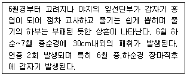
- 거세미나방
- 멸강나방
- 노랑굴파리
- 굼벵이
(정답률: 62%)
103. 공정과 공사 단위당 원가와의 관계를 바르게 나타낸 것은? (단, Y축은 원가, X축은 공정을 나타낸다.)
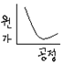
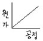
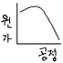
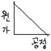
(정답률: 55%)
104. 다음 설명하는 원소로 가장 적합한 것은?
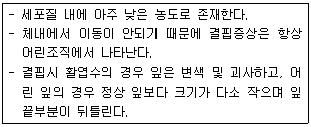
- P
- Ca
- Mg
- B
(정답률: 60%)
1⑤. 병원체의 전반 방법 중 곤충 및 소동물에 의한 것은?
- 대추나무 빗자루병
- 밤나무 흰가루병
- 향나무 녹병
- 교목의 입고병
(정답률: 52%)
106. 목재 벤치의 내용 연수로 가장 적합한 것은?
- 5년
- 7년
- 10년
- 15년
(정답률: 54%)
107. 수목 이식 직후 조치하여야 할 주 관리 사항으로 가장 부적절한 작업은?
- 수간보호
- 지주설치
- 관수 및 전정
- 뿌리돌림
(정답률: 74%)
108. 잔디의 갱신을 위하여 뗏밥을 주는 목적을 기술한 것 중 가장 적합한 것은?
- 땅속 줄기를 노출되게 하여 잔디밭 표면을 보기 좋게 한다.
- 뗏밥은 한 번에 많이 주어야 병해 발생이 적다.
- 뗏밥은 잔디의 생육을 돕고 잔디밭의 표면을 고르게 해준다.
- 잔디밭의 뗏밥은 가을철 생육이 계속되는 동안 준다.
(정답률: 74%)
109. 다음의 비탈면 표면을 보호(우수침식방지, 동상붕괴억제, 녹화, 전면식생조성)하는 식생공법 중 일반적으로 가장 시공 능률이 높은 것은?
- 직파 공법
- 식생판 공법
- 종자 뿜어붙이기 공법
- 식생혈 공법
(정답률: 48%)
110. 무궁화, 모과나무 등에 많은 피해를 주는 진딧물을 방제하기 위하여 다음 무슨 농약을 살포하여야 하는가?
- 만코제브수화제
- 티오파네이트메틸수화제
- 데메톤-에스-메틸유제
- 글리포세이트액제
(정답률: 35%)
111. 다음 중 잎을 가해하는 대표적인 곤충과가 아닌 것은?
- 솔노랑잎벌과
- 하늘소과
- 총채벌레과
- 굴나방과
(정답률: 62%)
112. 일반적인 지주목의 필요성 중 장점이 아닌 것은?
- 수고생장에 도움이 된다.
- 지상부의 생육에 있어서 흉고직경생장을 비교적 작게 하는 동시에 상부의 지지된 부분의 생육을 증진시킨다.
- 근부의 생육에 비교하여 지상부의 생육을 적절하게 해준다.
- 수간의 굵기가 균일하게 생육할 수 있도록 해준다.
(정답률: 38%)
113. 다음 중 토양산도pH 3.5~6.0 범위의 산성토양에서 생육상태가 정상으로 유지되는 잔디로 가장 적합한 것은?
- 들잔디
- 금잔디
- 버뮤다그라스
- 켄터키블루그라스
(정답률: 42%)
114. 전년도 가지에도 꽃이 피는 라일락의 아름다운 개화상태를 감상하기 위한 가장 적절한 전정 시기는?
- 봄철 꽃이 진 바로 직후
- 지엽이 무성한 여름철
- 낙엽이 진 직후 가을철
- 겨울철 휴면기
(정답률: 62%)
115. 조경관리 계획 수립상 필요조건이 아닌 것은?
- 조경시설물, 공작물의 배치 계획
- 조경대상에 설정되어진 목적
- 기후, 토양, 식생 등의 자연적 조건
- 전통, 주민의식, 각종 규범 등의 사회적 조건
(정답률: 45%)
116. 다음 중 자연공원의 모니터링을 하기 위한 효과적 방법과 가정 거리가 먼 것은?
- 측정지표의 다양화
- 신뢰성 있는 기법 도입
- 최소비용 도모
- 측정위치 설정 합리성
(정답률: 44%)
117. 지나치게 자라는 가지의 신장을 억제하기 위해서 신초의 끝부분을 따버리는 작업은?
- 적아
- 적심
- 전정
- 적엽
(정답률: 60%)
118. 다음 중 2차 대기오염물질이 아닌 것은?
- PAN
- O3
- PBN
- H2S
(정답률: 47%)
119. 온대지방의 일반적인 건생천이단계를 순서대로 바르게 나열한 것은?
- 나지→1년생초본→다년생초본→양수관목→양수교목→음수교목
- 나지→1년생초본→다년생초본→양수교목→양수관목→음수교목
- 음수교목→나지→1년생초본→다년생초본→양수관목→양수교목
- 나지→1년생초본→다년생초본→음수교목→양수관목→양수교목
(정답률: 68%)
120. 레크리에이션 공간에 최소한의 손상이 발생하는 경우에 유효한 방법으로서 생산력이 크고 안정된 부지들에 적용하기가 좋은 관리 전략은?
- 완전방임형 관리
- 폐쇄 후 육성관리
- 계속적인 개방. 이용상태 하에서 육성관리
- 순환식 개방에 의한 휴식기간 확보
(정답률: 40%)